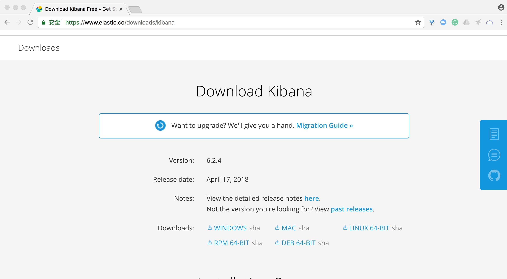
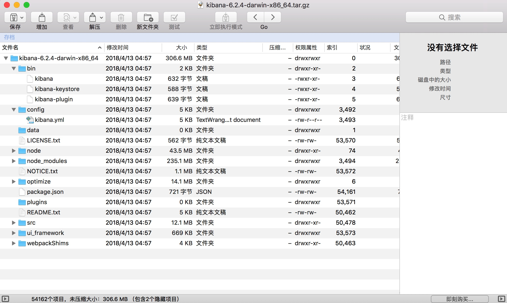
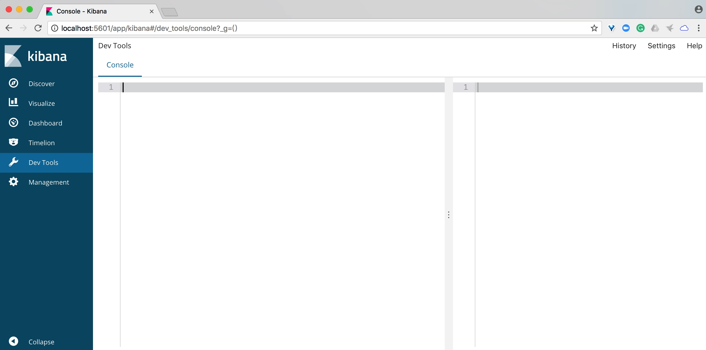
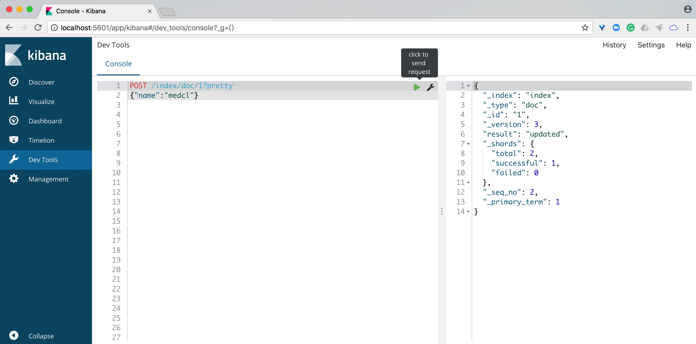
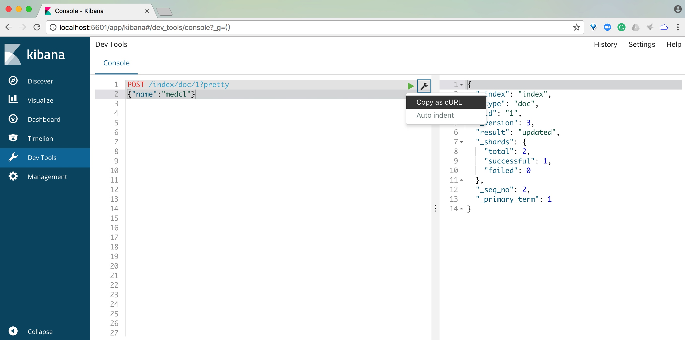
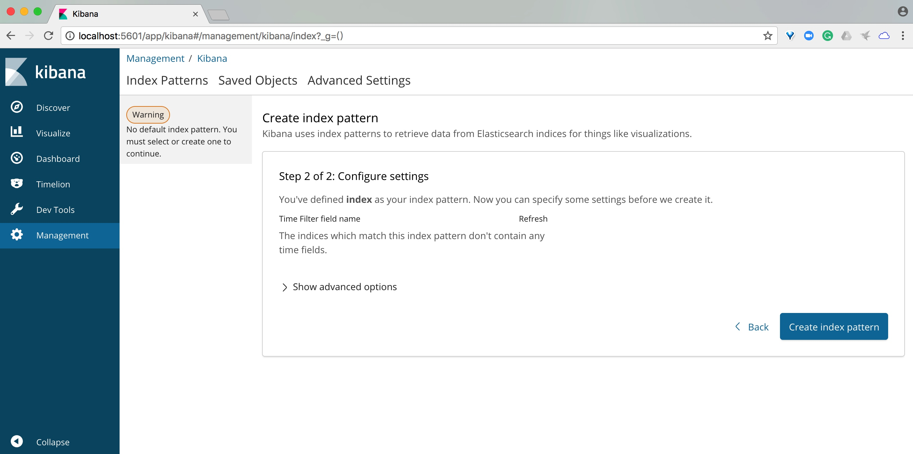

开发调试工具介绍
工欲善其事必先利其器！
这一节主要介绍一下后续开发过程中，需要用的一些工具。
Elasticsearch 的接口是 RESTful 风格，也就是标准的 HTTP 请求，如果是 Windows 环境，推荐使用 Fiddler 来进行 HTTP 请求的调试，使用起来非常方便，Fiddler 现在虽然也提供多个平台的支持，但是需要依赖 Mono 环境，有兴趣的同学可以自行研究，此处不展开。
下载地址：https://www.telerik.com/fiddler。
还可以使用基于浏览器的 HTTP 请求构造器，如 Chrome 的 PostMan 扩展 就很不错。
安装地址：https://chrome.google.com/webstore/detail/postman/fhbjgbiflinjbdggehcddcbncdddomop?hl=zh-CN
不过，我们今天主要介绍的是另外一款更加好用的工具，就是 Kibana，没错，就是 Elastic Stack 里面的 Kibana，Kibana 不仅是一个功能强大的大数据可视化实时分析平台，同时也是 Elastic Stack 管理的窗口，Kibana 里面包含了很多跟 Elastic Stack 管理相关的功能和 App，你可以很方便的使用，比如可以通过 Dev-Tools 来进行 RESTful 请求的构造。更重要的是 Kibana 是跨平台的，是基于 Web 浏览器的，可以方便的在任何地方远程访问，使用起来更加方便。
下面，让我们来看一下具体如何使用吧。
打开 Kibana 下载页面：https://www.elastic.co/downloads/kibana，选择我们操作系统所在平台和对应的版本，注意 Kibana 的版本和 Elasticsearch 版本要保持一致，这里也选择 6.2.4，我这里是 Mac 系统，点击链接会自动下载一个 tar.gz 的压缩包。

解压之后，可以看到程序的目录结构如下：

我们来分别解读一下吧。
bin 目录下面的是可执行程序:
- kibana 是程序主入口。
- kibana-keystore 用于设置密钥信息。
- kibana-plugin 用于插件的安装和卸载。
config 目录下面只有一个文件，kibana.yml 是我们的主要配置文件。
其他目录我们平时不用管，这里就不介绍了。
假设我们已经启动了 Elasticsearch，运行在本地，监听的地址是本地 localhost，端口默认的 9200，现在我们在本地启动 Kibana 来进行使用。
打开配置文件 config/kibana.yml，里面有很多的设置，不过现在我们只需要关心 Elasticsearch 的相关配置就好，如下：
#elasticsearch.url: "http://localhost:9200"
#elasticsearch.username: "user"
#elasticsearch.password: "pass"
因为 Elasticsearch 和 Kibana 都是安装在同一台机器上，所以其实也不用修改配置，保持默认就好，配置前的 # 表示该行配置被注释了，如果两者是分开部署的，则需要调整对应的 Elasticsearch 服务器 IP 和用户认证信息，修改后记得去掉注释哦。
下一步，我们启动 Kibana，切换到 Kibana 目录，执行 bin/kibana 程序启动即可，如下图：

从上面的启动信息可以看到，Kibana 启动成功，默认监听的端口是 5601，我们用浏览器打开 http://localhost:5601 查看一下。

可以看到 Kibana 进去之后，呈现在我们眼前的是她的一个欢迎界面，有很多的程序入口，接下来我给大家一一介绍他们分别是什么。
首先，我们看一下，最左侧的导航，分别是多个不同的 App 入口，在 Kibana 里面，每一个 App 代表一个完整的功能集合，我们先打开 Dev Tools App，如下图：

就是一个 Console 窗口，非常简单，左边是输入框，可以输入提交给 Elasticserch 的查询，右边是返回结果显示的地方。
还记得上一篇我们用到的创建索引的 curl 请求么，我们将它粘贴进来，你会发现它自动变简洁了，只剩下最核心的 HTTP 请求类型、 数据路径和数据，点击右侧绿色的三角形按钮，就可以立即执行这个 POST 请求，请求的响应返回数据显示在右侧的窗口，如下图所示：

反过来，如果对这段请求进行了修改，想要拷贝到终端下面执行，或是到其他服务器上面执行，只需要点击工具按钮，选择 Copy as cURL 即可得到标准的 curl 命令，如下图：

怎么样，是不是比直接用 cURL 要简单和方便很多，另外，这里面输入命令还支持自动补全，完全不用死记硬背 Elasticsearch 的查询语法和担心写错。
Kibana 还支持数据的搜索和可视化操作，在使用之前，我们需要在这里设置索引数据的 Index Pattern，Index Pattern 可以理解为我们要操作的数据源，支持设置完整的索引名，也支持通过通配符来指定一批索引， 我们首先打开 Management App，如下图：

这里我们设置刚刚创建索引时，使用的索引名 index 作为 index pattern，如下图：

点击下一步，预览设置然后完成创建，如下图：

创建成功后，会返回该索引的 mapping 信息，可以看到索引里面的字段和字段的类型，如下图：

不同的字段有不同的数据类型，对应能够执行的操作也就不一样，标记为 searchable 表示该字段可被用于全文搜索，标记为 aggregatable 表示该字段可以被用于聚合计算。
接下里，我们再来看一下 Discover 这个 App，如下图：

可以看到，它是我们浏览 Elasticsearch 索引数据的地方，你也可以在这里进行按关键字进行全文搜索和进行数据的过滤。
除此以外，Visualize、Dashboard 和 Timelion 等 App 是我们用来对 Elasticsearch 里面的数据进行可视化分析的地方，我们在这里就不展开了，有兴趣的读者可以自行查看官网手册和相关资料。